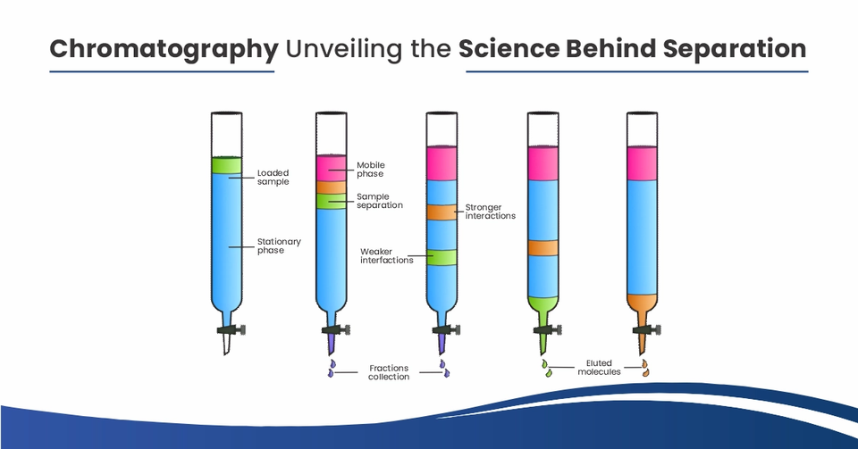
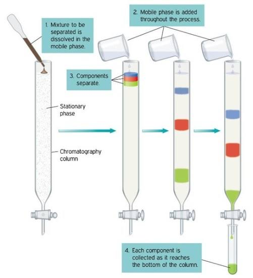

Stationary phase
| Vietnamese | Pha tĩnh |
|---|---|
| English | Stationary phase |
| Pronunciation | /ˈsteɪʃənəri feɪz/ |
| Word type | noun (as labelled in the PDFs) |
Topic 2 — Meaning (Vietnamese)
Pha tĩnh
Meaning (English)
Pha đứng yên trong quá trình sắc kí./ The phase that remains fixed during chromatography.
Example
Silica gel is commonly used as a stationary phase.
Images from the PDFs




